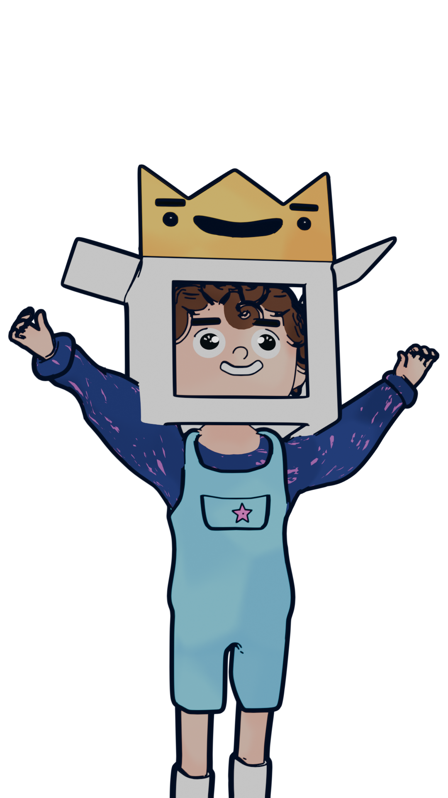
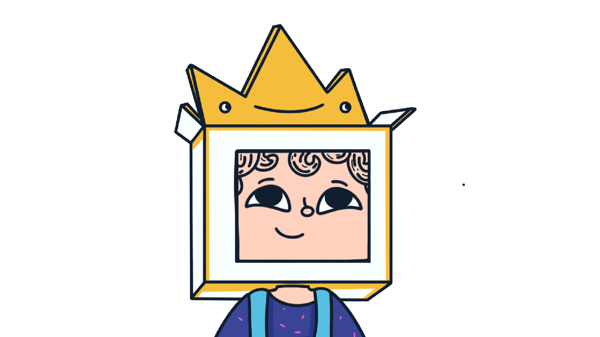
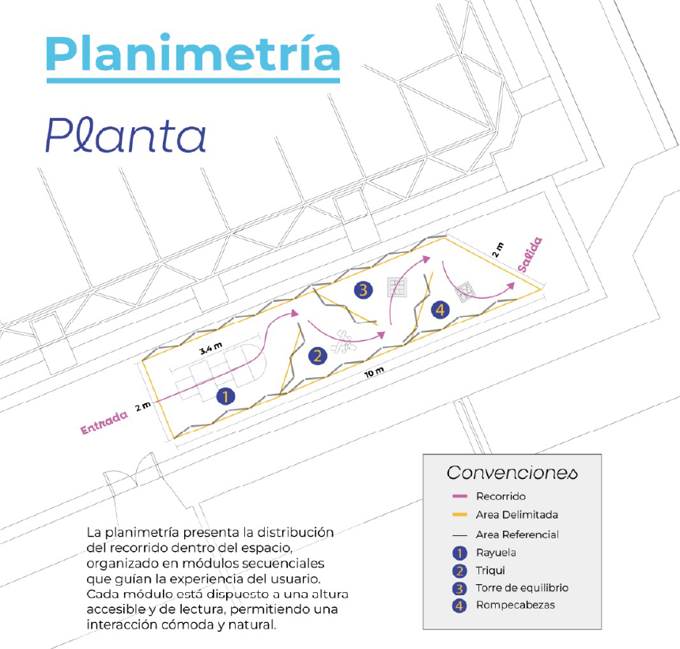

Este proyecto propone el diseño de un espacio interactivo, modular e inmersivo, que invite a interrumpir esa lógica de vivir de forma automática, generando una experiencia sensorial que permita al usuario detenerse, percibir y habitar conscientemente el presente, desde la reflexión y el autocuestionamiento.
Es el acto de evocar recuerdos, no implica quedarse en el pasado, sino activar recuerdos que siguen vivos en el presente, permitiendo una reconexión emocional a través de la experiencia.
Se propone un recorrido interactivo modular cercano a la entrada de la universidad, con el objetivo de generar una pausa dentro del flujo cotidiano. La activación de la nostalgia a través del juego puede funcionar como un detonante emocional que permite a los estudiantes universitarios reconectarse con el presente.

La experiencia se desarrolla a través de una secuencia de juegos donde cada uno activa una dimensión distinta del usuario. La rayuela pone el cuerpo en movimiento y facilita la participación. La guerra de almohadas genera una liberación emocional al romper con las normas habituales. El triqui introduce una pausa que organiza la atención, mientras que la torre de equilibrio exige precisión y concentración en el momento. Finalmente, el rompecabezas invita a desacelerar y reflexionar, permitiendo integrar la experiencia. En conjunto, los juegos construyen un recorrido que va del movimiento y la emoción hacia la atención y la reflexión.

Es un niño con una caja en la cabeza, una figura que mezcla lo humano con lo simbólico. Su cabeza, la caja, guarda todo aquello que ha sido olvidado: recuerdos, emociones, juegos y fragmentos de la infancia. La caja no es solo un objeto, es una metáfora. Representa la mente saturada, llena de pensamientos acumulados, pero también un contenedor de lo valioso que no hemos vuelto a abrir.